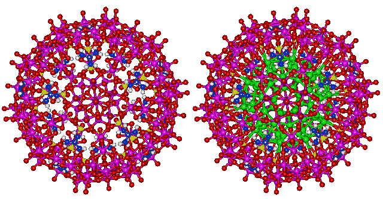
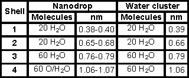
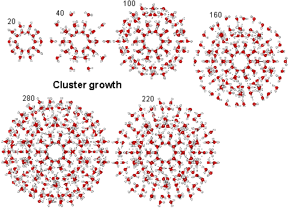

The giant Mo240 hollow opening dodecahedra
The giant Mo240 hollow opening dodecahedra
{(NH2)3C}20.{(MoVI)MoVI5O21(H2O)6}12.{MoV2O4(SO4)}10.{MoV2O4(H2PO2)}20.100H2O
The water nanodrop consists of 100 water molecules inside a quasi-spherical polyoxomolybdate nanocapsule cluster {(Mo)Mo5}12(Mo2 spacer)30 [417]. The structure of the contained nanodrop may be modulated by changes in the surrounding molybdenum-based cluster [547]. The water molecules are held by ice-like hydrogen-bonding with the attractive bond energies between the 30 hydrogen bonds in the inner dodecahedron, the 50 hydrogen bonds in the inner two shells, and all the hydrogen bonds in the outer shell of 60 water molecules calculated to be 23.3 kJ ˣ mol−1, 29.7 kJ ˣ mol−1 and 28.9 kJ ˣ mol−1 respectively [547]. The structure [417] is shown below, with the interior H2O oxygen atoms shown green on the right.
Oxomolybdate nanodrop, with and without internal water, shown green

The inner four shells of ES, consisting of 160 water molecules (see below right), have been found in almost identical positions and orientations within the cavity-encapsulated icosahedral water nanodrop in the {(NH2)3C}20.{(Mo)Mo5O21(H2O)6}12.{Mo2O4(SO4)}10.{Mo2O4(H2PO2)}20.100H2O cluster. The interactive structure of this cluster is available (Jmol), as is the water ES structure (Jmol).
Positions of water in nanodrop and the water cluster (ES)

The linkage of water molecules (O-atoms are shown green) to the pentagonal (MoVI)MoVI5 groups (Mo violet, O red) in the nanocapsule is shown below left. Five hydrogen-bonded links form between pentagonal boxes of water molecules (H2O)25 in the nanodrop and each of twelve such groups. The complete water molecules are shown on the right, with the protons placed randomly.
The link to water (O atoms shown green) in the water nanodrop
The link to water in the water nanodrop
The clustering growth is shown below, where the clustering up to 160 molecules of water is as within both the nanodrop and icosahedral water (ES) cluster, whereas the larger clusters are found in ES only.
Water cluster architecture in the icosahedral water cluster and the Mo nanodrop

The water nanodrop is affected by the structure of the spacer groups (above shown as SO4 and H2PO2). The structure of the nanodrop with formate (HCO2−) spacer ligands has been compared with the above structure with sulfate (SO42−) and spacers [2284]. Both capsules contain 172 H2O molecules plus 30 ligands and have their 20 pores sealed by 20 formamidinium cations, as above. The nanodrop surrounded by the smaller formate spacers is found to be more fluid than with the larger sulfate spacers [2284].
Putative nanocapsule containing a C60 fullerene
The structuring of the water inside the {(Mo)Mo5}12(Mo2 spacer)30 nanocapsule and outside the C60 fullerene are easily matched and allow the possibility of it containing a C60 fullerene within the nanodrop, as shown opposite. This cluster has not been found or even described until now, but is thought quite possible when considering the high solubility of both materials and the mechanism of formation of the nanocapsule. The interactive structure of this cluster is available (Jmol).
The giant Mo240 dodecahedra with (H2O)60 inside
Larger but similar to the nanodrop is the giant Mo240 hollow opening dodecahedra [4044],
[MoV180MoVI60(OH)60O620-x(SO3)20-x(SO4)x]−(80-2x)
This cage is composed of 20 tripod-shaped [Mo6O22(SO3)]n−/[Mo6O21(SO4)]n− building blocks with three connected vertices and 30 cubane-type [Mo4O16]n− edge building block, featuring a rare, nearly regular pentagonal dodecahedron with a large inner cavity (diameter up to 1.8 nm) and 12 opening pentagonal windows. Although hollow and of the correct size, the interior will not contain the (H2O)100 cluster shown above as the hydrogen bonding is not found in the appropriate places. The interior does, however, have 60 oxygen atoms pointing towards the center that could hydrogen-bond to a (fullerene-like) (H2O)60 clathrate shell, if found inside (as shown in the figure left, with these water oxygen atoms shown green).
Home | Site Index | Nanodrop (Jmol) | Polyoxomolybdate {Mo154} nanowheel | Back: Evidence | LSBU | Top
This page was established in 2007 and last updated by Martin Chaplin on 24 October, 2021